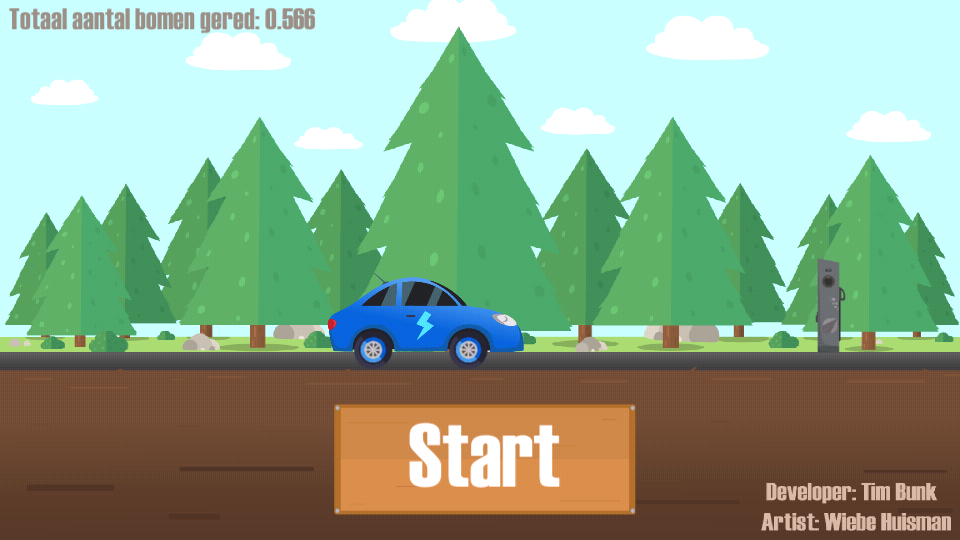

Electric vehicle game is a Dutch game that I made together with a artist from my school during my internship at Capteur. A lot of people at Capteur drive electric and thats were the idea of this game came from.
The purpose of the game is to simulate a average electric vehicle in different weather situation to show the performance of the battery but more important is that driving electric is better for the enviroment. This game shows how much better it is for the enviroment when compared to a diesel car.
The game is made in Unity using c# and the game can be played on both Android and IOS phones.
Date: 2018
Electric vehicle game

The game can be played on your phone. You have to drive from point A to point B and you will have to charge your car sometimes as well. Once you reach point B you can see a comparison with the electric car and the diesel car.
We also added a high score for who can drive the fastest to point B too make the game somewhat more fun.
You will also notice a increase in power usage when the car is driving in cold weather or when there is a lot of wind. You can see the power usage on the dashboard.
Another fun thing in the game that artist came up with is the parallax background. This is not something you can just do in Unity. I had to write a tool for the artist so he could easily create the parallax background.